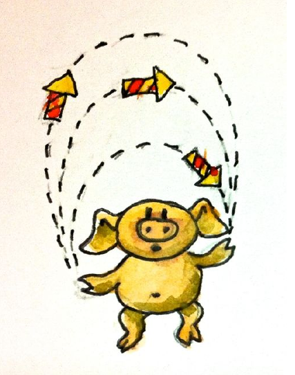
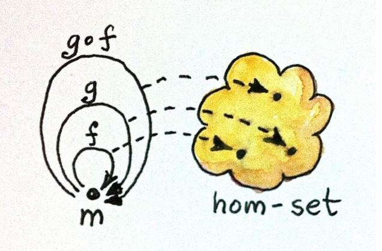
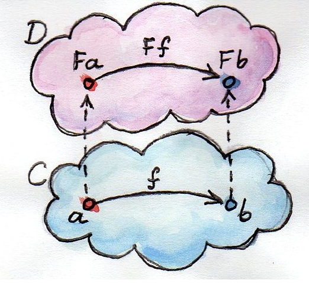
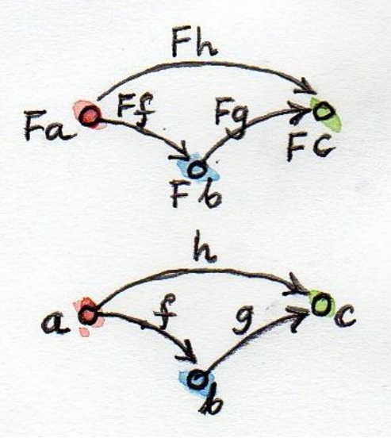
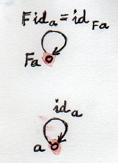
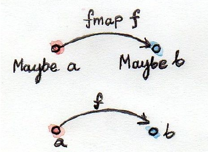

Napredne tehnike programiranja - Haskell
Sadržaj
- 1. Uvod
- 2. Funkcije
- 3. Data deklaracije
- 4. Kinds
- 5. Haskell — lazy by default
- 6. Polimorfizam
- 7. GADTs
- 8. Type Classes
- 9. Monoidi
- 10. Funktori
- 11. Aplikativni funktori
- 12. Monade
- 13. Profiling
- 14. Haskell Core za_radoznale
- 15. Literatura

An advanced, purely functional, statically typed, lazy programming language.
1 Uvod1
Haskell je čisto funkcionalan programski jezik opšte namene. Karakteriše ga non-strict semantika i stroga statička tipizacija. Ime je dobio po logičaru Haskell Curry-ju. Nastao je kasnih 80-tih godina kao rezultat rada grupe akademaca u oblasti računarskih nauka. Haskell je izgrađen oko veoma napredanog type system-a koji sadrži algoritam za zaključivanje tipova (type inference) pa se veoma malo jezičkih konstrukcija u kodu mora eksplicitno obeležiti tipovima.
Haskell jasno nameće način razmišljanja. Jedino kod nastao čisto funkcionalnim načinom razmišljanja se može2 zapisati u Haskell-u. Tipski neispravne izraze kompajler detektuje i zabranjuje.
Pošto je "funckionalan programski jezik" veoma rastegljiv pojam odmah ovde na početku ćemo reći šta za nas znači da je Haskell funkcionalan:
- Funkcije su prvoklasni koncepti.
- Značenje Haskell programa je izgrađeno na osnovu izračunavanja izraza a ne na izvršavanju naredbi — Haskell nema naredbe.
Pošto je "čisto funkcionalan programski jezik" takođe rastegljiv pojam u poslednje vreme i to ćemo odmah na početku jasno odrediti. Kada kažemo da je Haskell čisto funkcionalan programski jezik to znači:
- Nema mutiranja, nigde! Sve je imutabilno.
- Izrazi nikada nemaju sporedne efekte (ni kod ispisivanja na ekran3).
- Sve funkcije za iste ulaze vraćaju iste izlaze.
Haskell je istinski lenj. Dakle, nije da većina funckija vraća lenje sekvence već nešto striktnije:
- Izrazi ( svi, bilo koji ) se ne evaluiraju dok njihov rezultat nije potreban za neko drugo izračunavanje.
- Omogućuje kompozicijsko programiranje (wholemeal programiranje).
- To ima svoju manu — rezonovanje o korišćenju vremena i prostora postaje dosta komplikovanije.
Haskell je statički tipiziran jezik — svaki izraz ima svoj tip i svi tipovi se proveravaju u vreme kompajliranja. Program koji nije korektan sa stanovišta tipova se ne može kompajlirati a još manje pokrenuti. Tipovi izraza nisu dostupni u vreme izvršavanja — nisu ni potrebni4, kompajlirani kod je korektan i to je dokazivo "matematikom koja stoji iza Haskell kompajlera".5
U nastavku ćemo dati neke ideje koje su od najveće važnosti u Haskell porgramiranju.
1.1 Tipovi
Haskell ima statički type sistem. Statički type sistemi propisuju da tipovi izraza (a u procedurnim jezivima objekata, promenljivih) moraju biti poznati u vreme kompajliranja.
Kada programer u kodu mora da anotira sve izraze to može da bude prilično dosadna stvar. Ono što je bitno da zapamtimo je:
Obavezna anotacija svih izraza u programu nije osobina statičkih type sistema već pre posledica nedovoljne ekspresivnosti nekih statičkih type sistema (kao što je slučaj kod Java, C, C++, C#…).
Haskell-ov type sistem nam daje sledeće stvari:
Pomaže nam da promislimo i izrazimo svoj program
Prvi korak u pisanju Haskell programa je popišemo sve tipove koji su potrebni. Pošto je Haskell-ov type sistem prilično ekspresivan to nije trivijalan zadatak ali zato jeste veliki korak ka jasnom razumevanju strukture programa.
Kao posledicu imamo da kada ne znamo šta treba da radi program ne možemo takav program ni da napravimo (kompajliramo). Kolikogod prethodna rečenica zvučala paradoksalno svi smo nekada svedočili situacijama u kojima je program napisan, i radi, čak iako niko nije u stanju da kaže šta treba da radi.
Služi kao forma dokumentacije
Type sistem je toliko ekspresivan da čitanje tipa funkcije najčešće već samo govori sasvim dovoljno o tome šta funkcija radi pa tekst o tome šta funckija radi nije neophodan. Mnoge standardne Haskell funckije nemaju dokumentaciju u vidu teksta!
Pretvara run-time greške u compile-time greške
Bolje je imati korektan program nakon kompajliranja nego beskrajno testirati u run-time-u. Haskell ima maksimu — ako se kompajlira onda je korektno. Postoji mogućnost da se "provuče" neka greška vezana za logiku programa ali se i to u Haskell-u očekuje ređe nego u ostalim programskim jezicima.
1.2 Apstrakcije
"Don't Repeat Yourself" je česta mantra koja se čuje u današnjem programiranju, u nauci se zove još i Princip Apstrakcije. Idaja je da ništa ne treba pisati više puta: svaka ideja, algoritam, parče podatka treba da se pojavi samo na jednom jedinom mestu u kodu. Izdvajanje sličnih delova koda se naziva procesom apstrakcije.
Haskell je vrlo dobar u apstrahovanju. Koncepti kao što su parametric polymorphism, funkcije višeg reda, type classes i drugi za cilj imaju da se izbore za princip apstrakcije.
Da li je Vaš softver DRY?
Šta je Vaš izgovor?
1.3 Wholemeal programiranje
Citat Ralf Hinze:
“Functional languages excel at wholemeal programming, a term coined by Geraint Jones. Wholemeal programming means to think big: work with an entire list, rather than a sequence of elements; develop a solution space, rather than an individual solution; imagine a graph, rather than a single path. The wholemeal approach often offers new insights or provides new perspectives on a given problem. It is nicely complemented by the idea of projective programming: first solve a more general problem, then extract the interesting bits and pieces by transforming the general program into more specialised ones.”
Wholemeal programiranje je dakle deduktivan proces.
Pogledajmo ovo parče pseudo Java/C#/C… koda:
int acc = 0; for ( int i = 0; i < lst.length; i++ ) { acc = acc + 3 * lst[i]; }
Richard Bird kaže da ovo parče koda boluje od "indeksitisa": brine se o iteriranju kroz niz na niskom nivou — tako što prati indekse. Pored toga još i meša u jedno ono što se obično smatra kao dve operacije — uvećavanje svakog elementa za 3 i sabiranje svih elemenata. U Haskell-u to bismo uradili ovako:
sum $ map (3*) lst
1.4 Elementi jezika
Možemo reći da se Haskell sastoji iz dva jezika: jezik tipova i
jezik izraza gde prvi nije obavezno pisati jer type inference
algoritam ume da zaključi informacije koje on nosi. Konstrukcija
:: razdvaja ova dva jezika.
jezik izraza :: jezik tipova
:: se još čita i "ima tip".
1.4.1 Dekleracije i variable
Deklarisanje promenljivih možemo uraditi na sledeći način:
-- this is a declaration x :: Int x = 23 {- this was declaration with some long long multi-line comment which exceeds standard line lenght in my editor -}
Kod iznad deklariše variablu koja ima tip Int i
vrednost 3. Imajte u vidu da se ova promenljiva ne može više
nikada promeniti ona će do kraja sveta(dobro programa) imati
vrednost koju smo joj ovde zadali. Takođe, ako pokušamo negde
drugo ponovo da deklarišemo ovu istu variablu kompajler će
prijaviti grešku:
-- x = 42 -- src/Intro.hs:10:1: error: … -- Multiple declarations of ‘x’ -- Declared at: /home/novak/haskell/haskellNTP/showcase/src/Intro.hs:5:1 -- /home/novak/haskell/haskellNTP/showcase/src/Intro.hs:10:1 -- Compilation failed.
Dakle, = ne predstavlja dodelu kao što je slučaj u mnogim
drugim jezicima već definiciju kao u matematici. Dakle x = 1
se ne čita kao "x dobija vrednost 1" ili "dodeljujem broj 4
promenljivoj x" već "x je definisano kao 1". Šta radi sledeći
kod?
b :: Int b = b + 1
1.4.2 Osnovni tipovi
Int je osnovni celobrojni tip i po standardu mora biti u stanju
da prikaže vrednosti u opsegu ne manjem od \(\pm2^{29}\). Na
standardnim 64-bitnim mašinama je \(\pm2^{63}\). Maksimalna i
minimalna vrednost Int tipa su date sa biggestInt i
smallestInt:
biggestInt, smallestInt :: Int biggestInt = maxBound smallestInt = minBound -- λ> biggestInt -- 9223372036854775807 -- λ> smallestInt -- -9223372036854775808
Integer tip je proizvoljne preciznosti i ograničen je samo
memorijom računara:
bigInteger :: Integer bigInteger = 1234567890987654321987340982334987349872349874534 -- λ> bigInteger -- 1234567890987654321987340982334987349872349874534 reallyBig :: Integer reallyBig = 2^(2^(2^(2^2))) digitsNumOfReallyBig :: Int digitsNumOfReallyBig = length (show reallyBig) -- λ> digitsNumOfReallyBig -- 19729
Float je standardan tip za predstavu razlomljenih brojeva u
single-precision, Double je double-precision:
d1, d2 :: Double d1 = 4.5387 d2 = 6.2831e-4 -- λ> d1 -- 4.5387 -- λ> d2 -- 6.2831e-4
Tu su i Bool, Char i String:
b1, b2 :: Bool b1 = True b2 = False c1, c2, c3 :: Char c1 = 'x' c2 = 'Ø' c3 = 'ダ' s :: String s = "Hello, Haskell!"
1.4.3 Aritmetika
Probajmo sledeće izraze:
ex01 = 3 + 2 ex02 = 19 - 27 ex03 = 2.35 * 8.6 ex04 = 8.7 / 3.1 ex05 = mod 19 3 ex06 = 19 `mod` 3 ex07 = 7 ^ 222 ex08 = (-3) * (-7)
- backticks prefiksnu funkciju pretvaraju u infiksnu
- minusi kao znakovi moraju biti u zagradama kako ne bi bili parsirani kao oduzimanje
Sledeći izraz ne prolazi kompajler:
-- badArith = x + bigInteger -- <interactive>:73:5-14: error: -- • Couldn't match expected type ‘Int’ with actual type ‘Integer’ -- • In the second argument of ‘(+)’, namely ‘bigInteger’ -- In the expression: x + bigInteger -- In an equation for ‘it’: it = x + bigInteger
Haskell neće raditi implicitnu konverziju između ova dva tipa, morate Vi eksplicitno:
goodArith = x + fromInteger(bigInteger) -- λ> goodArith -- 7636536262163761533
Ovo takođe ne prolazi kompajler:
-- one = x / x -- <interactive>:80:1-5: error: -- • No instance for (Fractional Int) arising from a use of ‘/’ -- • In the expression: x / x -- In an equation for ‘it’: it = x / x
Za deljenje celobrojnih vrednosti moramo da koristimo div:
one = x `div` x -- λ> one -- 1
1.4.4 Boolova logika
Ovo radi kako ste i navikli:
ex11 = True && False ex12 = not (False || True) ex13 = ('a' == 'a') ex14 = (16 /= 3) ex15 = (5 > 3) && ('p' <= 'q') -- What is this? ex16 = "Haskell" > "C++"
1.4.5 Definisanje osnovnih funkcija
Funkcije se definišu na sledeći način:
-- Compute the sum of the integers from 1 to n. sumtorial :: Integer -> Integer sumtorial 0 = 0 sumtorial n = n + sumtorial (n-1)
Integer -> Integer znači da funkcija prima Integer i vraća
Integer.
U definiciji funkcije prvi izraz koji odgovara pozivu se
izvršava. Objasnite izvršavanje funkcije sumtorial?
Izbor poziva takođe može biti izražen i korišćenjem mehanizma koji se zove guards:
hailstone :: Integer -> Integer hailstone n | n `mod` 2 == 0 = n `div` 2 | otherwise = 3*n + 1
Guards se izvršavaju redom — od gore ka dole i prvi izraz koji
se evaluira u True će izazvati da se izvrši njegova grana
funkcije.
foo :: Integer -> Integer foo 0 = 16 foo 1 | "Haskell" > "C++" = 3 | otherwise = 4 foo n | n < 0 = 0 | n `mod` 17 == 2 = -43 | otherwise = n + 3
Šta će biti foo(-3), foo(0), foo(1), foo(36), foo(38)?
1.4.6 Parovi
Parovi služe da uparimo neke dve informacije. Postoje i ostale n-torke ali se u praksi uglavnom koriste parovi jer za ostalo posotje bolji načini predstavljanja.
p :: (Int, [Char]) p = (43, "čestrestridvajestri")
Obratiti pažnju da su n-torke različitihj tipova:
p1 :: (Int, [Char]) p1 = (1, "two") p2 :: (Integer, [Char]) p2 = (1, "two") p3 :: (Double, Double) p3 = (2.2, 2.2)
N-torkama se u praksi najčešće pristupa pattern matching-om:
mulPair :: (Int, Int) -> Int mulPair (x, y) = x * y -- λ> mulPair (2, 3) -- 6
1.4.7 Funkcije više argumenata
Funkcija sa više argumenata se definiše na sledeći način:
multiArgFoo :: Int -> Int -> Int -> Int multiArgFoo x y z = x * y * z sv = multiArgFoo 1 2 3 -- λ> sv -- 6
Ako Vam tip funkcije multiArgFoo :: Int -> Int -> Int -> Int
deluje čudno i pitate se:
Zašto ovoliko strelica, funkcija prima 3 parametra i vraća jededan zar ne bi više imalo smisla da bude nešto kao
Int Int Int -> Int?
onda ste na dobrom tragu. Razlog za ovo je dosta dublji od same sintakse i ima valjan razlog u matematici. Razlog za ovakvu notaciju je Currying.
Currying je proces transformacije funckije koja prima više argumenata u funckiju koja prima samo jedan argument i vraća drugu funkciju ako su još neki parametri potrebni.
Pa tako:
λ> foo = multiArgFoo 1 λ> :t foo foo :: Int -> Int -> Int λ> foo1 = foo 2 λ> :t foo1 foo1 :: Int -> Int λ> res = foo1 3 λ> :t res res :: Int λ> res 6
Ovo podseća na parcijalnu primenu funkcije ali to nije baš to. Pogledajte ovu diskusiju na StackOverflow (barem prva dva odgovora).
1.4.8 Liste
Liste su jedne od najosnovnih struktura podataka Haskell-a.
nums, range, range2 :: [Integer] nums = [1,2,3,19] range = [1..100] range2 = [2,4..100] unlimited = [1..] hello1 :: [Char] hello1 = ['h', 'e', 'l', 'l', 'o'] hello2 :: String hello2 = "hello" helloSame = hello1 == hello2 -- λ> helloSame -- True
Postoji i list comprehension:
l = [ (x `mod` 3) * y | x <- [1 .. 10] , y <- [2, 4, 40] , (x * y) `mod` 2 == 0 ] -- λ> l -- [2,4,40,4,8,80,0,0,0,2,4,40,4,8,80,0,0,0,2,4,40,4,8,80,0,0,0,2,4,40]
1.4.9 Konstrukcija listi
Sve liste se grade od prazne liste korišćenjem cons operatora
(:). Ovo Vam je možda poznato iz Lispa?
ex18 = 1 : [] ex19 = 3 : (1 : []) ex20 = 2 : 3 : 4 : [] ex21 = [2,3,4] == 2 : 3 : 4 : []
Obratite pažnju da su ovo prave jednostruko spregnute liste a ne nizovi. Uzgred, šta je razlika između niza i jednostruko spregnute liste?
1.4.10 Funkcije nad listama
Funkcije koje rade sa listama takođe koriste pattern matching:
-- Compute the length of a list of Integers. intListLength :: [Integer] -> Integer intListLength [] = 0 intListLength (_:xs) = 1 + intListLength xs
Pošto prvi element liste ne koristimo ne moramo ni da koirstimo
ime za njega i zato imamo intListLength (_:xs). Ovo je
rekurzija, uslov završetka je dat elegantno zar ne?
Paterni mogu da se ugnježdavaju:
sumEveryTwo :: [Integer] -> [Integer] sumEveryTwo [] = [] -- Do nothing to the empty list sumEveryTwo (x:[]) = [x] -- Do nothing to lists with a single element sumEveryTwo (x:(y:zs)) = (x + y) : sumEveryTwo zs
1.4.11 Kombinovanje funkcija
Haskell kao funckionalan jezik inspiriše da rešenja većih problema gradimo kroz rešavanje manjih porcija problema. Pa tako kopleksne funkcije gradimo kombinovanjem jednostavnijijh.
-- Generate the sequence of hailstone iterations from a starting number. hailstoneSeq :: Integer -> [Integer] hailstoneSeq 1 = [1] hailstoneSeq n = n : hailstoneSeq (hailstone n) -- The number of hailstone steps needed to reach 1 from a starting -- number. hailstoneLen :: Integer -> Integer hailstoneLen n = intListLength (hailstoneSeq n) - 1 -- λ> hailstoneSeq 100 -- [100,50,25,76,38,19,58,29,88,44,22,11,34,17,52,26,13,40,20,10,5,16,8,4,2,1]
Kako vam ovo deluje?
Možda mislite: ovo nije memorijski efikasno, treba da potroši
vreme i memoriju da napravi celu hailstone sekvencu od n pa onda
da računa njenu dužinu.
Zapravo, zahvaljujući lenjoj eveluaciji čitavo računanje koristi
O(1) momoriju bez obzira na dužinu sekvence. Zapravo skoro
O(n) ali o tome će biti reči kasnije. Sada možete da probate to u
praksi, probajte:
-- λ> hailstoneLen 9 -- 19 -- λ> hailstoneLen 999999999999999999999999999999999999999999999999999999999999999999999 -- 2026
1.4.12 Pragme
{-# LANGUAGE #-} {-# OPTIONS_GHC #-} {-# INCLUDE #-} {-# INFIX #-}
{-# DEPRECATED #-} {-# WARNING #-} {-# RULES #-}
1.5 Kompajler (GHC)
Haskell ima više različitih kompajlera (kao što C ima GCC, Clang…) ali je GHC definitivno najkorišćeniji. Sam GHC kao kompajler je prilično pametno dizajniran i predstavlja jedan od najnaprednijih kompajlera danas. Na ovom kursu koristićemo samo GHC i nećemo diskutovati o ostalim kompajlerima.
1.5.1 Type inference
Haskell je implicitno tipiziran jezik (implicitly-typed) za razliku od C/C++, Java, C#, Go i dr. koji su eksplicitno tipizirani (explicitly-typed). To praktično znači da u kodu ne mora stajati tip za sve izraze već kompajler sam ume da zaključi tipove. Dakle, tipovi su poznati u vreme kompajliranja (pre pokretanja porgrama) ali nisu eksplicitno napisani u kodu.
1.6 GHCi
GHCi je Haskell REPL (ne toliko moćan kao u Clojure-u zbog statičke
prirode Haskell-a). Listu opcija koju pruža možete naći sa :?:
λ> :? Commands available from the prompt: <statement> evaluate/run <statement> : repeat last command :{\n ..lines.. \n:}\n multiline command :add [*]<module> ... add module(s) to the current target set :browse[!] [[*]<mod>] display the names defined by module <mod> (!: more details; *: all top-level names) :cd <dir> change directory to <dir> :cmd <expr> run the commands returned by <expr>::IO String :complete <dom> [<rng>] <s> list completions for partial input string :ctags[!] [<file>] create tags file <file> for Vi (default: "tags") (!: use regex instead of line number) :def <cmd> <expr> define command :<cmd> (later defined command has precedence, ::<cmd> is always a builtin command) :edit <file> edit file :edit edit last module :etags [<file>] create tags file <file> for Emacs (default: "TAGS") :help, :? display this list of commands :info[!] [<name> ...] display information about the given names (!: do not filter instances) :issafe [<mod>] display safe haskell information of module <mod> :kind[!] <type> show the kind of <type> (!: also print the normalised type) :load[!] [*]<module> ... load module(s) and their dependents (!: defer type errors) :main [<arguments> ...] run the main function with the given arguments :module [+/-] [*]<mod> ... set the context for expression evaluation :quit exit GHCi :reload[!] reload the current module set (!: defer type errors) :run function [<arguments> ...] run the function with the given arguments :script <file> run the script <file> :type <expr> show the type of <expr> :undef <cmd> undefine user-defined command :<cmd> :!<command> run the shell command <command> -- Commands for debugging: :abandon at a breakpoint, abandon current computation :back [<n>] go back in the history N steps (after :trace) :break [<mod>] <l> [<col>] set a breakpoint at the specified location :break <name> set a breakpoint on the specified function :continue resume after a breakpoint :delete <number> delete the specified breakpoint :delete * delete all breakpoints :force <expr> print <expr>, forcing unevaluated parts :forward [<n>] go forward in the history N step s(after :back) :history [<n>] after :trace, show the execution history :list show the source code around current breakpoint :list <identifier> show the source code for <identifier> :list [<module>] <line> show the source code around line number <line> :print [<name> ...] show a value without forcing its computation :sprint [<name> ...] simplified version of :print :step single-step after stopping at a breakpoint :step <expr> single-step into <expr> :steplocal single-step within the current top-level binding :stepmodule single-step restricted to the current module :trace trace after stopping at a breakpoint :trace <expr> evaluate <expr> with tracing on (see :history) -- Commands for changing settings: :set <option> ... set options :seti <option> ... set options for interactive evaluation only :set args <arg> ... set the arguments returned by System.getArgs :set prog <progname> set the value returned by System.getProgName :set prompt <prompt> set the prompt used in GHCi :set prompt2 <prompt> set the continuation prompt used in GHCi :set editor <cmd> set the command used for :edit :set stop [<n>] <cmd> set the command to run when a breakpoint is hit :unset <option> ... unset options Options for ':set' and ':unset': +m allow multiline commands +r revert top-level expressions after each evaluation +s print timing/memory stats after each evaluation +t print type after evaluation +c collect type/location info after loading modules -<flags> most GHC command line flags can also be set here (eg. -v2, -XFlexibleInstances, etc.) for GHCi-specific flags, see User's Guide, Flag reference, Interactive-mode options -- Commands for displaying information: :show bindings show the current bindings made at the prompt :show breaks show the active breakpoints :show context show the breakpoint context :show imports show the current imports :show linker show current linker state :show modules show the currently loaded modules :show packages show the currently active package flags :show paths show the currently active search paths :show language show the currently active language flags :show <setting> show value of <setting>, which is one of [args, prog, prompt, editor, stop] :showi language show language flags for interactive evaluation
1.7 IDE
Haskell je podržan u svim u poznatijim razvojnim alatima.
- Emacs
- haskell-mode, intero i drugi dodatni paketi po ukusu
- za ljude koji počinju sa Emacs-om preporučujem Spacemacs koji već ima sloj za Haskell u kome su standardni alati već podešeni.
- Vim haskell-vim-now
- Eclipse EclipseFP
- IntelliJ intellij-haskell
- Atom ide-haskell
- Leksah
1.7.1 Hoogle
Hoogle je sajt na kome možete pretraživati dokumentaciju. Podržava jezik za postavljanje upita. Može se veoma jednostavno pokretati i u lokalu.
1.7.2 Stack & Stackage
Stack je standardan build tool i dependency manager. Projekti sa kodom koji vidite u ovoj prezentaciji a koji su dostupni na GitHub-u su pod kontrolom Stack-a. Pojednostavljuje rad sa Haskell-om tako da više liči na proces razvoja softvera u Python-u, JavaScript-u, Javi… Preporučujem ga pre haskell platform-e.
Stackage je centralni repozitorijum koji koristi Stack. Njihov odnos je sličan odnosu PIP-a i PyPI-a u Python svetu.
1.8 Čitanje poruka o grešci
Nemojte se plašiti poruka o grešci.
GHC-ove poruke o grešci nisu duge nego su informativne.
Poruke o grešci sadrže mnogo informacija iz kojih vidite zašto nešto "nije po volji" kompajlera. Iz tih grešaka, ako umete da ih čitate, možete da naučite bitne stvari.
-- x ++ "string" -- <interactive>:105:1: error: -- • Couldn't match expected type ‘[Char]’ with actual type ‘Int’ -- • In the first argument of ‘(++)’, namely ‘x’ -- In the expression: x ++ "string" -- In an equation for ‘it’: it = x ++ "string"
Šta kaže ova greška?
- Očeluje se
[Char]tip, a nađen jeInt - kod prvog argumenta funkcije
(++), tačnijex. - u izrazu
x ++ "string" - u jednačini za (
itje variabla koja će uvek imati vrednost izraza koju ste predhodno uneli u GHCi):it = x ++ "string"
1.9 Ograničenja GHC kompajlera za_radoznale
1.9.1 Monomorfizam restrikcija
1.10 Zadaci 1
Na kursu cis194 su data dva zadatka, smatram ih vrlo ilustrativnim za uvod u Haskell :)
- Napisati funkciju
validateza validiranje broja platne kartice - Napisati funkciju
hanoikoja prima broj diskova Hanoi tornjeva i daje listu poteza koje treba preduzeti da bi se diskovi pravilno preneli sa jednog na drugi toranj.
2 Funkcije
Funkcije se pišu slično kao u matematici. O Haskell funkcijama treba razmišljati više na matematički način a menje kao o procedurama/rutinama u proceduralnom programiranju:
(fooIme :: <izraz_za_tip>)? (<definicija_za_fooIme>)+
Primer jedne funkcije:
aFoo :: (String, Integer) -> [Integer] -> [Integer] aFoo _ [] = [] aFoo (x, xx) y = map (* xx) y -- λ> aFoo ("dsa", 22) [1,2,3] -- [22,44,66]
Funkcije podržavaju pattern matching. Funkcije se često pišu uz
korišćenje guards mehanizma. case izraz se retko koristi za
rukovanje parametrima funkcije jer za njim retko ima potrebe. case
izraz takođe podržava pattern matching.
aFoo1 _ [] = [] aFoo1 (x, xx) y = case y of y:[] -> [y] otherwise -> map (* xx) y -- λ> aFoo1 ("", 2) [3] -- [3] -- λ> aFoo1 ("", 2) [3, 4, 5] -- [6,8,10]
case izraz može da koristi quards:
aFoo2 :: (String, Integer) -> [Integer] -> [Integer] aFoo2 _ [] = [] aFoo2 (_, xx) y = case y of _ | length y == 1 -> y | otherwise -> map (* xx) y -- λ> aFoo2 ("", 2) [3] -- [3] -- λ> aFoo2 ("", 2) [3, 4, 5] -- [6,8,10]
case može da kombinuje pattern matching i quards:
aFoo3 :: (String, Integer) -> [Integer] -> [Integer] aFoo3 (_, xx) y = case y of [] -> [] y:ys | length ys == 0 -> [y] otherwise -> map (* xx) y -- λ> aFoo3 ("", 2) [3] -- [3] -- λ> aFoo3 ("", 2) [3, 4, 5] -- [6,8,10]
3 Data deklaracije
Postoje tri osnovna načina na koja možete uvesti novi tip u Haskell:
data, newtype i type.
3.1 data
Standardan način za uvođenje novih tipova:
data Person = Person String String -- λ> Person "Pera" "Peric" -- Person "Pera" "Peric" :: Person
Obratite pažnju da Person levo od znaka jednakosti i Person
desno od znaka jednakosti nisu iste stvari. Ono sa leve strane unosi
novi pojam u jezik tipova dok ono sa desne strane unosi novi pojam u
jezik izraza. U primeru gore samo se slučajno isto zovu. Evo
primera:
data Person1 = MkPerson String String -- λ> MkPerson "Pera" "Peric" -- MkPerson "Pera" "Peric" :: Person1
MkPerson je u jeziku izraza, a Person1 u jeziku tipova.
Ono sa leve strane jednakosti naziva se type constructor jer konstruiše tip u jeziku tipova, ono sa desne strane se naziva data constructor jer konstruiše vrednost tog tipa u jeziku izraza.
Pogledajmo sledeći primer:
data Suit = Club | Diamond | Heart | Spade data CardValue = Two | Three | Four | Five | Six | Seven | Eight | Nine | Ten | Jack | Queen | King | Ace data Card = Card { value :: CardValue , suit :: Suit } -- λ> Card Ace Club -- Card Ace Club :: Card
Tipovi kao što su CardValue i Suit gde specificiramo oblik
svakog elementa zovu se algebartski tipovi. Algebarski tipovi se
tako zovu jer se definišu korišćenjem "algebarskih" operacija
("algebra" ovde praktično znači operaciju sabiranja — izbora A |
B i množenja — kombinacije A B). Npr. naš prvi tip Person je
kombinacija dva String-a, Suit je izbor jedne od boja na
kartama.
Tipovi mogu biti i parametrizovani:
data XList a = Cons a (XList a) | Empty -- λ> (Cons 1 (Cons 2 Empty)) -- (Cons 1 (Cons 2 Empty)) :: Num a => XList a
3.1.1 Records sintaksa
Postoji i alternativni način za uvođenje novih tipova kada se
koristi data — records syntax:
data PersonRec = PersonRec { name :: String , surname :: String , age :: Int } -- λ> PersonRec "Mile" "Milic" -- PersonRec "Mile" "Milic" :: Int -> PersonRec -- λ> name -- name :: PersonRec -> String -- λ> PersonRec "Mile" "Milic" 25 -- PersonRec "Mile" "Milic" 25 :: PersonRec -- λ> name (PersonRec "Mile" "Milic" 25) -- "Mile" -- λ> name $ PersonRec "Mile" "Milic" 25 -- "Mile" -- λ> PersonRec {name = "Mile", surname = "Milic", age = 25} -- PersonRec {name = "Mile", surname = "Milic", age = 25} :: PersonRec -- λ> surname $ PersonRec {name = "Mile", surname = "Milic", age = 25} -- "Milic"
3.2 newtype
newtype dekleracija uvodi novi tip na isti način kao što to radi
data. Ako u vašem programu sve pojave newtype zamenite sa
data velike su šanse da će se kompajlirati(dakle raditi). Ali
konverzija u suprotnom smeru stoji samo pod jednim uslovom — ako
data dekleracije imaju samo jedan value konstruktor sa samo
jednim parametrom:
newtype HTML = HTLM String
Vrednost newtype dekleracije je u tome što uvodi tipove koji
nemaju nikakvu cenu u run time-u — u run time-u se mogu
predstaviti "bit za bit" isto kao i tipovi koje obavijaju. U
slučaju iznad kompajler će znati da su tipovi HTML i String
potpuno različiti, ni jedna funkcija koja prima/vraća HTML ne
može umesto njega da koristi String. Tako dobijamo sve benefite
komplajlera jer on razlikuje tipove bez obzira što se ti tipovi u
run time-u reprezentuju na "bit za bit" isti način.
3.3 type
Type dekleracija uvodi sinonime za tipove — type synonyms. U
C-u se to na primer radi sa typedef. Tipovi uvedeni sa type
imaju iste value konstruktore kao i osnovni tip i u svim izrazima
gde se pojavljuje osnovni tip mogu stajati umesto njega.
newtype State s a = State { runState :: s -> (s, a) } type Name = String uppercase :: String -> String uppercase x = map toUpper x uppercaseName :: Name -> Name uppercaseName x = map toUpper x -- λ> uppercase "Mile" -- "MILE" -- λ> uppercaseName "Mile" -- "MILE"
4 Kinds
Tipovi u svojoj osnovi predstavljaju skupove vrednosti. Tako je
Integer skup svih celih brojeva, [Bool] skup svih lista
istinitosnih vrednosti.
Haskell koristi još opširniju definiciju tipa koja obuhvata i
funkcije nad tipovima. Pa se tako neprimenjen konstruktor list tipa
[] takođe smatra tipom. Parcijalno primenjen konstruktor tipa
funkcije (->) Integer takođe. Ovi tipovi svakako ne sadrže
vrednosti.
Kako bi razlikovao obične tipove od funkcija nad tipovima Haskell
koristi system of kinds (sistem rodova - u slobodnom
prevodu). Kinds se mogu zamisliti kao "tipovi tipova". Svaki
kind je ili * ili kind1 -> kind2 gde su kind1 i kind2
takođe kinds. * je kind svih običnih tipova (onih koji sadrže
vrednosti) a kind1 -> kind2 je kind svih funkcija na nivou tipa
koje preslikavaju kind1 u kind2. Evo nekih primera tipova i
njihovih kind-a:
Integer, Char, [Bool], [[Bool]], [val] :: * [], Maybe :: * -> * (,), (->) :: * -> * -> *
Funkcije na nivou tipova koje primaju više parametara mogu biti izražene kroz Currying:
(,), (->) :: * -> * -> *
Dobar blog na ovu temu nalazi se ovde.
5 Haskell — lazy by default
5.1 Strict evaluation vs. lazy evaluation
5.1.1 Cena strict izračunavanja
5.1.2 Cena lazy izračunavanja
5.2 Haskell laziness look and feel vs. Java Supliers ("type level laziness")
Java je na SitePoint-u. Haskell je na CIS-u.
6 Polimorfizam
Vrsta polimorfizma koju haskell koristi je parametarski polimorfizam.
7 GADTs
8 Type Classes
Type class-e predstavljaju skupove tipova koji ispoljavaju neke iste osobine. Te iste osobine oslikane su funkcijama koje obuhvata klasa.
Eq je klasa koja predstavlja skup tipova koji mogu da se porede:
class Eq a where (==) :: a -> a -> Bool (/=) :: a -> a -> Bool
Ako želimo da naš tip može da se poredi treba da napravimo instancu
našeg tipa u Eq klasi.
data Foo = I Int | C Char instance Eq Foo where (I x) == (I y) = x == y (C x) == (C y) = x == y (C x) == (I y) = ord x == y (I x) == (C y) = x == ord y -- λ> C 'a' == I 97 -- True -- λ> C 'a' == I 99 -- False
8.1 Automatsko instanciranje sa deriving
Kada je situacija dovoljno prosta, kompajler može samostalno da
uradi proširenje type class-e. Da bismo naznačili da to želimo
treba da koristimo deriving:
data Bar a = B [a] deriving (Eq, Show) -- λ> B [1, 2, 3] == B [1, 2, 3] -- True -- λ> B [1, 2, 3] == B [1, 2, 3, 3] -- False
U primeru sa Foo smo takođe mogli samo da iskoristimo deriving.
8.2 class NIJE class iz Pythona i Jave
Ono što je type class u Haskell-u to je sličnije abstraktnim
klasama u Javi i Pythonu.
-- Novi tipovi data UnderGStudent = UnderGStudent { uGHunamInfo :: HumanInfo , uGStudentInfo :: StudentInfo } deriving (Show) data PhDStudent = PhDStudent { phDHumanInfo :: HumanInfo , phDStudentInfo :: StudentInfo , thesis :: String } deriving (Show) data StudentInfo = StudentInfo { index :: Int } deriving (Show) data HumanInfo = HumanInfo { name :: String , surname :: String , birthYear :: Int } deriving (Show) -- Ljudi su ljudi jer se muče, to ih čini ljudima class Human a where struggle :: a -> String -- Podrazumevana implementacija struggle = const "A poor man is struggling." -- Predavači su pre svega ljudi, a potom moraju znati i da se -- predstave class Human a => Lecturer a where introduce :: a -> String -- UnderGStudent instanca čoveka, UnderGStudent je čovek instance Human UnderGStudent where struggle (UnderGStudent (HumanInfo n _ _) _) = n ++ " is gravely struggling." -- PhDStudent instanca čoveka, PhDStudent je čovek instance Human PhDStudent -- PhdStudent instanca predavača instance Lecturer PhDStudent where introduce (PhDStudent (HumanInfo n _ _) _ t) = "I am " ++ n ++ " and my research is directed towards " ++ t ++ "." -------------------------------------------------------------------------------- -- Primeri: pera = UnderGStudent (HumanInfo "Petar" "Petrovic" 1987) (StudentInfo 8791) -- λ> name . uGHunamInfo $ pera -- "Petar" -- -- λ> struggle pera -- "Petar is gravely struggling." zika = PhDStudent (HumanInfo "Zika" "Zikic" 1983) (StudentInfo 123) "functional programming" -- λ> name . phDHumanInfo $ zika -- "Zika" -- -- λ> thesis zika -- "functional programming" -- -- PhDStudent koristi default-nu implementaciju struggle funkcije -- λ> struggle zika -- "A poor man is struggling." -- -- λ> introduce zika -- "I am Zika and my research is directed towards functional programming."
8.3 fundeps (Functional Dependencies)
Fundeps se koriste da daju dodatna međusobna ograničenja parametara klasa. U klasama sa više parametara daju mogućnost da se tipovi parametara zaključuju na osnovu tipova drugih parametara.
Jedan naivan prikaz problema kog rešavaju fundeps:
-- Abstrakcija raspakivanja class Unpack packaging content where unpack :: packaging -> content data Carton = Carton { volume :: Double } deriving (Eq, Show) data Milk = Milk { kind :: String , desc :: String } deriving (Show) -- Carton i Milk instanca raspakivanja, kada se raspakuje mleko iz -- kartona instance Unpack Carton Milk where unpack p = Milk "cow milk" $ "carton of " ++ (show . volume $ p) ++ " volume." c :: Carton c = Carton 500 -- try = unpack c -- src/FunDeps.hs:25:7-14: error: … -- • Ambiguous type variable ‘content0’ arising from a use of ‘unpack’ -- prevents the constraint ‘(Unpack -- Carton content0)’ from being solved. -- Relevant bindings include -- try :: content0 -- (bound at haskellNTP/showcase/src/FunDeps.hs:25:1) -- Probable fix: use a type annotation to specify what ‘content0’ should be. -- These potential instance exist: -- instance Unpack Carton Milk -- -- Defined at haskellNTP/showcase/src/FunDeps.hs:19:10 -- • In the expression: unpack c -- In an equation for ‘try’: try = unpack c -- Compilation failed.
Kompajler prosto ne može da zna kog je tipa izraz unpack c.
Zašto?
Pokušajmo da reprodukujemo kako kompajler "razmišlja" na osnovu greške koju nam je dao.
Prvo nam kaže da smo bili dvosmisleni pri korišćenju unpack
funkcije jer on ne može da repreodukuje kako tačno izgleda klasa
te funkcije. Jasno mu je da je ta klasa nešto nalik (Unpack Carton
content0) ali ga muči taj content0 jer za njega ne ume da kaže
kog je tipa:
-- src/FunDeps.hs:25:7-14: error: … -- • Ambiguous type variable ‘content0’ arising from a use of ‘unpack’ -- prevents the constraint ‘(Unpack -- Carton content0)’ from being solved.
I onda traži od nas da mu pomognemo. Kaže da bismo mi možda mogli
da mu pomognemo tako što ćemo reći kog je tipa izraz unpack c pa
će on onda umeti da shvati kako tačno izgleda klasa iz koje je ta
funkcija:
-- Probable fix: use a type annotation to specify what ‘content0’ should be.
I na kraju nam još pokazuje kako razmišlja tako što nam kaže da je
tražio sve moguće instance te sumnjive klase Unpack (i našao je
jednu).
-- These potential instance exist: -- instance Unpack Carton Milk -- -- Defined at haskellNTP/showcase/src/FunDeps.hs:19:10
Možda bismo se mogli izleteti i uzviknuti:
Pa eto mu odgovora. Piše u toj instanci kog je tipa unpack c
(naravno da je Milk)!
instance Unpack Carton Milk where unpack p = Milk "cow milk" $ "carton of " ++ (show . volume $ p) ++ " volume."
Međutim pogrešili bismo ( naravno ).
Zašto?
Zato što se naknadno može dodati nova instanca Unpack klase. ♦
Na primer:
data Yogurt = Yogurt { density :: String } deriving (Show) instance Unpack Carton Yogurt where unpack c = Yogurt $ "rare yogurt in carton of " ++ (show . volume $ c) ++ "."
Rešenje:
Možemo poslušati kompjler i eksplicitno dati tip izrazu:
-- λ> unpack c :: Yogurt -- Yogurt {density = "rare yogurt in carton of 500.0."}
Možemo iskoristiti FlexibleInstances dodatak jeziku:
-- λ> :set -XFlexibleContexts -- λ> unpack c -- unpack c :: Unpack Carton content => content
I možemo koristi fundeps:
class Unpack' packaging content | packaging -> content where unpack' :: packaging -> content instance Unpack' Carton Milk where unpack' p = Milk "cow milk" $ "carton of " ++ (show . volume $ p) ++ " volume." -- λ> unpack' c -- Milk {kind = "cow milk", desc = "carton of 500.0 volume."}
Sada smo u zaglavlju klase Unpack' rekli da:
Za jedan packaging tip može biti samo jedan content tip.
I nema nikakve dileme kog je tipa unpack' c jer ne može
postojati još jedna instanca klase Unpack' koja bi pravila
problem:
data EnergyDrink = EnergyDrink { caffeineRate :: Int } deriving (Show) -- instance Unpack' GlassBottle EnergyDrink where -- unpack' p = EnergyDrink 12 -- src/FunDeps.hs:78:10-33: error: … -- Functional dependencies conflict between instance declarations: -- instance Unpack' GlassBottle Beer -- -- Defined at /home/novak/haskell/haskellNTP/showcase/src/FunDeps.hs:78:10 -- instance Unpack' GlassBottle EnergyDrink -- -- Defined at /home/novak/haskell/haskellNTP/showcase/src/FunDeps.hs:90:10 -- Compilation failed.
Naravno, u neku drugu ambalažu se može bez problema pakovati nešto drugo, to svakako neće praviti problem:
data GlassBottle = GlassBottle { shape :: String } deriving (Show) data Beer = Beer { feel :: String } deriving (Show) instance Unpack' GlassBottle Beer where unpack' p = Beer $ "Fresh bear from the " ++ shape p ++ "." b = GlassBottle "curvy bottle" -- λ> unpack' b -- Beer {feel = "Fresh bear from the curvy bottle."}
9 Monoidi6
Monoid je veoma jednostavan a moćan koncept koji je obično veoma prirodan svakome od nas samo se u programiranju često ne koncentrišemo na njega. Sabiranje brojeva čini monoid, Množenje čini monoid, Konkatenacija stringova čini Monoid, future-i u konkurentnom programiranju čine Monoid, događaji (events) u Functional Reactional Programming čine monoid… Definicija sa osloncem na teoriju skupova bi bila:
Monoid je set sa binarnom operacijom. Operacija mora da bude asocijativn i da ima neutralni element (unit) u skupu.
Na primer, \(\mathbb{N}\) (sa nulom) pri sabiranju čini monoid:
\[(a + b) + c = a + (b + c)\]
Dakle važi asocijativnost. Važi i:
\[a + 0 = a\]
Dakle nula je neutralni element.
[Napomena] Obratite pažnju da komutativnost nije zahtevana za monoid iako za sabiranje (množenje) važi i komutativnost.
Za stringove i konkatenaciju važi:
("danas" ++ "sutra") ++ "prekosutra" == "danas" ++ ("sutra" ++ "prekosutra")
Prazan string je unit:
"nesto" ++ "" == "nesto"
Dakle, monoid u Haskell-u bi mogao da bude:
class Monoid m where mempty :: m mappend :: m -> m -> m
Pa bismo rekli da je String monoid sa konkatenacijom ovako:
instance Monoid String where mempty = "" mappend = (++)
9.1 Monoid u teoriji kategorija
Monoid je kategorija sa jednim objektom sa mnogo morfizama (i svakako id morfizmom kao neutralnim elementom).

Da li od svakog kategoričkog monoida (monoida u teoriji kategorija) može da se napravi skup (matematički skup) sa pridruženom binarnom operacijom i da to čini monoid (sada u teoriji skupova)?
Znamo da skup morfizama između dva objekta zovemo Hom-set. U njemu morfizmi čine elemente. Rezultati monoidalnog produkta (binarne operacije iz monoida) između elemenata seta odgovaraju kompoziciji morfizama u originalnoj kategoriji. Operacija je u toj kategoriji asocijativna jer je kompozicija asocijativna. Neutralni element je id morfizam.

Istini za volju (i matematici), morfizmi ne formiraju uvek skup. Za one kategorije kod kojih za svaka dva objekta morfizmi čine skup kažemo da su lokalno male (locally small). Taj skup onda zovemo Hom-set.
10 Funktori6
Ako posmatramo iz ugla teorije kategorija onda je Funktor takođe prost koncept:
Funktor je morfizam između kategorija.
Ako imamo dve kategorije \(C\) i \(D\), onda funktor \(F\) preslikava sve objekte i morfizme iz \(C\) u \(D\) na takav način da održava strukturu koja postoji u originalnoj kategoriji.
Ako postoji morfizam \(f\) u \(C\) takav da \[f :: a \rightarrow b\] onda u kategoriji \(D\) pod dejstvoj funktora \(F\) postoji \[Ff :: Fa \rightarrow Fb\].

Očuvati strukturu znači takođe i da sve što je bilo kompozicija u izvornoj kategoriji ostaje kompozivija i u drugoj kategoriji (na drugom kraju funktora). Dakle ako je postojao neki morfizam \(h\) takav da je \[h = g \circ f\] onda u kategoriji \(D\), pod dejstvom funktora \(F\), mora postojati morfizam \(Fh\) takav da važi \[Fh = Fg \circ Ff\].

Na kraju, bitno je da id morfizmi iz \(C\) budu mapirani u id morfizme u \(D\) tako da važi \[Fid_a = id_{F_a}\].

Obratite pažnju da za funktore nije neophodno da \(C\) i \(D\) kategorije budu razaličite. Funktori koji rade nad jednom istom kategorjom se zovu endofunktori.
10.1 Primeri funktora u programiranju
Primeri u Haskell-u predstavljaju endofunktore jer rade na jednom kategorijom (Hask - Type kategorija sa pridruženim računanjima koja se nikada ne završavaju - bottoms).
10.1.1 Maybe funktor
data Maybe a = Nothing | Just a
Kako bismo ispoštovali zahtev da funktor očuvava strukturu ("radi" i nad morfizmima, funkcijama) moramo za svaku funkciju koja ima potpis:
f :: a -> b
imati mehanizam koji će nam napraviti funkciju sa potpisom:
f' :: Maybe a -> Maybe b
koja će predstavljati morfizam \(f\) u kategoriji \(D\).
Haskell-ov mehanizam za dobijanje takve funkcije je funkcija višeg
reda koja se zove fmap i ima potpis:
fmap :: (a -> b) -> (Maybe a -> Maybe b)

fmap zbog Curry-inga možemo posmatrati i kao funkciju dva
parametra od kojih je prvi funkcija. Tako bismo za Maybe mogli
da implementiramo fmap ovako:
fmap _ Nothing = Nothing fmap f (Just x) = Just (f x)
Learn Some Haskell For The Great Good funktore objašnjava
analogijom kutije za pakovanje, a fmap kao funkciju koja se
primenjuje samo na sadržaj i onda novi sadržaj upakuje u istu
kutiju.
Da li Vam ta analogija deluje prirodno?
Studentima se za vežbu ostavlja da odgovore:
- Da li je lista funktor?
- Napišite instancu
Functor-a za listu. - Zašto Haskelleri insistiraju na
fmappre nego namap(iako postoji u Haskell-u), odakle im to?
11 Aplikativni funktori
13 Profiling
Zašto je ovaj program spor?
Zašto ovaj program koristi ovoliko memorije?
Profiling je dinamička ili statička analiza programa koja služi da izmeri koliko i kako program troši resurse. Informacije koje daju profiler-i koriste se za optimizaciju.
Kod funkcionalnih jezika osnovni nivo profiling-a odnosi se na merenje potrošnje resursa koju program pravi pri pozivu pojedinih funkcija.
Haskell funkcija A koristi funkciju A1
Haskell funkcija A1 koristi funkciju A2
Haskell funkcija B koristi funkciju B1
Haskell funkcija B1 koristi funkciju B2
Haskell funkcija A1 je spora i troši previše memorije. Šta nam
garantuje da to nije zbog B1?
13.1 Primitivni profiling samo sa Unix time
13.2 GHC podrška za profiling
Izvodi se u tri koraka:
Kompajliranje programa za profiling
GHC ubaci delove koda koji nam omogućavaju da u vreme izvršavanja dobijamo informacije za profiling. To se mora naglasiti posebnim opcijama koje se daju kompajleru (pun spisak opcija potražiti ovde):
ghc -prof -fprof-auto-top -rtsopts Modul.hs
Moguće je ubaciti odgovarajuću pragmu (cost centre annotation) na mesta u porgramu koja posebno želimo da "merimo":
{-# SCC ime_za_merenje #-}Primer programa koji koristi eksplicitne cost centre je dat u nastavku:
explicitCostCenters :: IO () explicitCostCenters = do print $ {-# SCC last_xs #-} last xs print $ {-# SCC last_init_xs #-} last $ init xs print $ {-# SCC last_ys #-} last ys print $ {-# SCC last_init_ys #-} last $ init ys where xs = [1..1000000] ys = [1..2000000]
Kako bi ovakva mesta u programu bila merena potrebno je da pri kompajliranju bude omogućena opcija
-prof.Ako projekat koristi stack sličan efekat komandi gore se može postići na sledeći način (imajte u vidu da
StackkoristiCabala tekCabalprosleđuje opcije GHC-u, pogledati ovde):stack build --library-profiling --executable-profiling \ --ghc-options="-fno-prof-cafs -rtsopts"
Pokretanje programa sa omogućenim opcijama za profiling
./projekat-exe +RTS -p
Pun spisak RTS opcija možete pogledati ovde.
Ako koristite stack:
stack exec -- projekat-exe +RTS -p
Analiza rezultata
Ako ste program izvršili sa RTS opcijom
-ponda ste dobili fajlprogram.profu kome se nalaze rezultati za analizu.Ako izvršimo prethodna dva koraka sa programom datim ranije naš
.proffile će ličiti na:Mon Mar 6 14:59 2017 Time and Allocation Profiling Report (Final) profiling-exe +RTS -N -p -RTS total time = 0.16 secs (163 ticks @ 1000 us, 1 processor) total alloc = 384,079,344 bytes (excludes profiling overheads) COST CENTRE MODULE SRC %time %alloc main.ys Main app/Main.hs:28:17-33 42.3 37.5 last_init_ys Main app/Main.hs:26:44-57 20.9 29.2 main.xs Main app/Main.hs:27:17-33 18.4 18.7 last_init_xs Main app/Main.hs:24:44-57 11.0 14.6 last_ys Main app/Main.hs:25:39-45 3.7 0.0 last_xs Main app/Main.hs:23:39-45 3.1 0.0 individual inherited COST CENTRE MODULE SRC no. entries %time %alloc %time %alloc MAIN MAIN <built-in> 46 0 0.6 0.0 100.0 100.0 CAF Main <entire-module> 91 0 0.0 0.0 99.4 100.0 main Main app/Main.hs:(23,1)-(28,33) 92 1 0.0 0.0 99.4 100.0 last_init_xs Main app/Main.hs:24:44-57 96 1 11.0 14.6 11.0 14.6 last_init_ys Main app/Main.hs:26:44-57 99 1 20.9 29.2 20.9 29.2 last_xs Main app/Main.hs:23:39-45 94 1 3.1 0.0 3.1 0.0 last_ys Main app/Main.hs:25:39-45 97 1 3.7 0.0 3.7 0.0 main.xs Main app/Main.hs:27:17-33 95 1 18.4 18.7 18.4 18.7 main.ys Main app/Main.hs:28:17-33 98 1 42.3 37.5 42.3 37.5 CAF GHC.IO.Handle.FD <entire-module> 88 0 0.0 0.0 0.0 0.0 CAF GHC.Event.Thread <entire-module> 86 0 0.0 0.0 0.0 0.0 CAF GHC.IO.Encoding <entire-module> 85 0 0.0 0.0 0.0 0.0 CAF GHC.IO.Handle.Text <entire-module> 84 0 0.0 0.0 0.0 0.0 CAF GHC.Conc.Signal <entire-module> 81 0 0.0 0.0 0.0 0.0 CAF GHC.Event.Poll <entire-module> 74 0 0.0 0.0 0.0 0.0 CAF GHC.IO.Encoding.Iconv <entire-module> 70 0 0.0 0.0 0.0 0.0 CAF GHC.Event.EPoll <entire-module> 64 0 0.0 0.0 0.0 0.0 main Main app/Main.hs:(23,1)-(28,33) 93 0 0.0 0.0 0.0 0.0
13.2.1 Još neke RTS (Run Time System) opcije
Ako programu od ranije pro pokretanju prosledimo opciju -pa
dobićemo širi izveštaj o korišćenju resursa koji će obuhvatati i
podatke o alokaciji memorije:
Mon Mar 6 15:27 2017 Time and Allocation Profiling Report (Final)
profiling-exe +RTS -N -pa -RTS
total time = 0.58 secs (577 ticks @ 1000 us, 1 processor)
total alloc = 384,115,072 bytes (excludes profiling overheads)
COST CENTRE MODULE SRC %time %alloc ticks bytes
GC GC <built-in> 72.3 0.0 417 0
main.ys Main app/Main.hs:28:17-33 9.4 37.5 54 144000016
last_init_ys Main app/Main.hs:26:44-57 6.4 29.2 37 111999960
main.xs Main app/Main.hs:27:17-33 5.4 18.7 31 72000016
last_init_xs Main app/Main.hs:24:44-57 3.6 14.6 21 55999960
last_ys Main app/Main.hs:25:39-45 1.0 0.0 6 16
last_xs Main app/Main.hs:23:39-45 1.0 0.0 6 16
SYSTEM SYSTEM <built-in> 0.9 0.0 5 35728
IDLE IDLE <built-in> 0.0 0.0 0 0
PINNED SYSTEM <built-in> 0.0 0.0 0 0
DONT_CARE MAIN <built-in> 0.0 0.0 0 0
OVERHEAD_of PROFILING <built-in> 0.0 0.0 0 0
MAIN MAIN <built-in> 0.0 0.0 0 22824
CAF GHC.Integer.Type <entire-module> 0.0 0.0 0 0
CAF GHC.Err <entire-module> 0.0 0.0 0 0
CAF GHC.Enum <entire-module> 0.0 0.0 0 0
CAF Foreign.Marshal.Alloc <entire-module> 0.0 0.0 0 0
CAF GHC.Event.PSQ <entire-module> 0.0 0.0 0 0
CAF GHC.Event.Manager <entire-module> 0.0 0.0 0 0
CAF GHC.Event.Array <entire-module> 0.0 0.0 0 0
CAF GHC.Stack.CCS <entire-module> 0.0 0.0 0 0
CAF GHC.IO.Encoding.UTF32 <entire-module> 0.0 0.0 0 0
CAF GHC.IO.Encoding.Latin1 <entire-module> 0.0 0.0 0 0
CAF GHC.Event.TimerManager <entire-module> 0.0 0.0 0 0
CAF GHC.Event.EPoll <entire-module> 0.0 0.0 0 48
CAF GHC.Show <entire-module> 0.0 0.0 0 0
CAF GHC.IO.Handle.Types <entire-module> 0.0 0.0 0 0
CAF GHC.IO.FD <entire-module> 0.0 0.0 0 0
CAF GHC.IO.Encoding.UTF8 <entire-module> 0.0 0.0 0 0
CAF GHC.IO.Encoding.UTF16 <entire-module> 0.0 0.0 0 0
CAF GHC.IO.Encoding.Iconv <entire-module> 0.0 0.0 0 232
CAF GHC.IO.Encoding.Failure <entire-module> 0.0 0.0 0 0
CAF GHC.Exception <entire-module> 0.0 0.0 0 0
CAF GHC.Arr <entire-module> 0.0 0.0 0 0
CAF GHC.Event.Poll <entire-module> 0.0 0.0 0 96
CAF GHC.Event.Internal <entire-module> 0.0 0.0 0 0
CAF System.Posix.Internals <entire-module> 0.0 0.0 0 0
CAF GHC.IO.Handle.Internals <entire-module> 0.0 0.0 0 0
CAF GHC.IO.Handle <entire-module> 0.0 0.0 0 0
CAF GHC.ForeignPtr <entire-module> 0.0 0.0 0 0
CAF GHC.Conc.Sync <entire-module> 0.0 0.0 0 0
CAF GHC.Conc.Signal <entire-module> 0.0 0.0 0 640
CAF GHC.Event.Control <entire-module> 0.0 0.0 0 0
CAF GHC.List <entire-module> 0.0 0.0 0 0
CAF GHC.IO.Handle.Text <entire-module> 0.0 0.0 0 88
CAF GHC.IO.Encoding <entire-module> 0.0 0.0 0 2872
CAF GHC.Event.Thread <entire-module> 0.0 0.0 0 1232
CAF GHC.TopHandler <entire-module> 0.0 0.0 0 0
CAF GHC.IO.Handle.FD <entire-module> 0.0 0.0 0 34512
CAF GHC.IO.Exception <entire-module> 0.0 0.0 0 0
CAF Control.Exception.Base <entire-module> 0.0 0.0 0 0
main Main app/Main.hs:(23,1)-(28,33) 0.0 0.0 0 16800
CAF Main <entire-module> 0.0 0.0 0 16
individual inherited
COST CENTRE MODULE SRC no. entries %time %alloc %time %alloc ticks bytes
MAIN MAIN <built-in> 46 0 0.0 0.0 100.0 100.0 0 22824
CAF Main <entire-module> 91 0 0.0 0.0 26.9 100.0 0 16
main Main app/Main.hs:(23,1)-(28,33) 92 1 0.0 0.0 26.9 100.0 0 1208
last_init_xs Main app/Main.hs:24:44-57 96 1 3.6 14.6 3.6 14.6 21 55999960
last_init_ys Main app/Main.hs:26:44-57 99 1 6.4 29.2 6.4 29.2 37 111999960
last_xs Main app/Main.hs:23:39-45 94 1 1.0 0.0 1.0 0.0 6 16
last_ys Main app/Main.hs:25:39-45 97 1 1.0 0.0 1.0 0.0 6 16
main.xs Main app/Main.hs:27:17-33 95 1 5.4 18.7 5.4 18.7 31 72000016
main.ys Main app/Main.hs:28:17-33 98 1 9.4 37.5 9.4 37.5 54 144000016
CAF Control.Exception.Base <entire-module> 90 0 0.0 0.0 0.0 0.0 0 0
CAF GHC.IO.Exception <entire-module> 89 0 0.0 0.0 0.0 0.0 0 0
CAF GHC.IO.Handle.FD <entire-module> 88 0 0.0 0.0 0.0 0.0 0 34512
CAF GHC.TopHandler <entire-module> 87 0 0.0 0.0 0.0 0.0 0 0
CAF GHC.Event.Thread <entire-module> 86 0 0.0 0.0 0.0 0.0 0 1232
CAF GHC.IO.Encoding <entire-module> 85 0 0.0 0.0 0.0 0.0 0 2872
CAF GHC.IO.Handle.Text <entire-module> 84 0 0.0 0.0 0.0 0.0 0 88
CAF GHC.List <entire-module> 83 0 0.0 0.0 0.0 0.0 0 0
CAF GHC.Event.Control <entire-module> 82 0 0.0 0.0 0.0 0.0 0 0
CAF GHC.Conc.Signal <entire-module> 81 0 0.0 0.0 0.0 0.0 0 640
CAF GHC.Conc.Sync <entire-module> 80 0 0.0 0.0 0.0 0.0 0 0
CAF GHC.ForeignPtr <entire-module> 79 0 0.0 0.0 0.0 0.0 0 0
CAF GHC.IO.Handle <entire-module> 78 0 0.0 0.0 0.0 0.0 0 0
CAF GHC.IO.Handle.Internals <entire-module> 77 0 0.0 0.0 0.0 0.0 0 0
CAF System.Posix.Internals <entire-module> 76 0 0.0 0.0 0.0 0.0 0 0
CAF GHC.Event.Internal <entire-module> 75 0 0.0 0.0 0.0 0.0 0 0
CAF GHC.Event.Poll <entire-module> 74 0 0.0 0.0 0.0 0.0 0 96
CAF GHC.Arr <entire-module> 73 0 0.0 0.0 0.0 0.0 0 0
CAF GHC.Exception <entire-module> 72 0 0.0 0.0 0.0 0.0 0 0
CAF GHC.IO.Encoding.Failure <entire-module> 71 0 0.0 0.0 0.0 0.0 0 0
CAF GHC.IO.Encoding.Iconv <entire-module> 70 0 0.0 0.0 0.0 0.0 0 232
CAF GHC.IO.Encoding.UTF16 <entire-module> 69 0 0.0 0.0 0.0 0.0 0 0
CAF GHC.IO.Encoding.UTF8 <entire-module> 68 0 0.0 0.0 0.0 0.0 0 0
CAF GHC.IO.FD <entire-module> 67 0 0.0 0.0 0.0 0.0 0 0
CAF GHC.IO.Handle.Types <entire-module> 66 0 0.0 0.0 0.0 0.0 0 0
CAF GHC.Show <entire-module> 65 0 0.0 0.0 0.0 0.0 0 0
CAF GHC.Event.EPoll <entire-module> 64 0 0.0 0.0 0.0 0.0 0 48
CAF GHC.Event.TimerManager <entire-module> 63 0 0.0 0.0 0.0 0.0 0 0
CAF GHC.IO.Encoding.Latin1 <entire-module> 62 0 0.0 0.0 0.0 0.0 0 0
CAF GHC.IO.Encoding.UTF32 <entire-module> 61 0 0.0 0.0 0.0 0.0 0 0
CAF GHC.Stack.CCS <entire-module> 60 0 0.0 0.0 0.0 0.0 0 0
CAF GHC.Event.Array <entire-module> 59 0 0.0 0.0 0.0 0.0 0 0
CAF GHC.Event.Manager <entire-module> 58 0 0.0 0.0 0.0 0.0 0 0
CAF GHC.Event.PSQ <entire-module> 57 0 0.0 0.0 0.0 0.0 0 0
CAF Foreign.Marshal.Alloc <entire-module> 56 0 0.0 0.0 0.0 0.0 0 0
CAF GHC.Enum <entire-module> 55 0 0.0 0.0 0.0 0.0 0 0
CAF GHC.Err <entire-module> 54 0 0.0 0.0 0.0 0.0 0 0
CAF GHC.Integer.Type <entire-module> 53 0 0.0 0.0 0.0 0.0 0 0
DONT_CARE MAIN <built-in> 49 0 0.0 0.0 0.0 0.0 0 0
GC GC <built-in> 51 0 72.3 0.0 72.3 0.0 417 0
IDLE IDLE <built-in> 47 0 0.0 0.0 0.0 0.0 0 0
OVERHEAD_of PROFILING <built-in> 50 0 0.0 0.0 0.0 0.0 0 0
PINNED SYSTEM <built-in> 48 0 0.0 0.0 0.0 0.0 0 0
SYSTEM SYSTEM <built-in> 52 0 0.9 0.0 0.9 0.0 5 35728
main Main app/Main.hs:(23,1)-(28,33) 93 0 0.0 0.0 0.0 0.0 0 15592
Listu ostalih opcija možete pogledati ovde.
13.2.2 Potrošnja memorije kroz vreme
Ponekada je korisno pratiti i potrošnju memorije kroz vreme. Ovakvi izveštaji mogu lepo pokazati kojom dinamikom dolazi do out of memory grešaka i zašto.
Kako bismo pokrenuli program tako da dobijemo heap profil
potrebno je da koristimo RTS opciju -h (ili neku drugu opciju
koja nam omogućuje inspekciju korišćenja heap-a, a puna lista je
data ovde). I nakon toga dobijamo fajl program.hp u kome se
nalaze merenja koja liče na:
JOB "profiling-exe +RTS -N -h" DATE "Mon Mar 6 15:38 2017" SAMPLE_UNIT "seconds" VALUE_UNIT "bytes" BEGIN_SAMPLE 0.000000 END_SAMPLE 0.000000 BEGIN_SAMPLE 0.200000 (48)PINNED 32720 (81)GHC.Conc.Signal.CAF 640 (88)GHC.IO.Handle.FD.CAF 680 (84)GHC.IO.Handle.Text.CAF 24 (93)main 144 (91)Main.CAF 48 MAIN 9960 (74)GHC.Event.Poll.CAF 24 (86)GHC.Event.Thread.CAF 560 (70)GHC.IO.Encoding.Iconv.CAF 120 (85)GHC.IO.Encoding.CAF 1168 (98)main.ys/main/Main.CAF 56795872 END_SAMPLE 0.200000 BEGIN_SAMPLE 0.272000 END_SAMPLE 0.272000
za vizualizaciju ovih rezultata može se koristiti program hp2ps:
stack exec -- hp2ps -d program-exe.hp
Za program:
import System.Environment import Text.Printf meanMain = do [d] <- map read `fmap` getArgs printf "%f\n" (mean [1 .. d]) mean :: [Double] -> Double mean xs = sum xs / fromIntegral (length xs)

14 Haskell Core za_radoznale
Kada profiling ne daje dovoljno dobar uvid u to šta program radi na niskim nivoima onda možda razumevanja Haskell Core-a može da pomogne.
Haskell Core je "jednostavan funkcionalan jezik" koji GHC koristi kao intermediate reprezentaciju programa. GHC optimizuje programe tako što ih sukcesivno transformiše u sve efikasnije forme. Core predstavlja poslednji nivo na kome se očuvavaju pravila funkcionalnog programiranja pre prevođenja na imperativni - kod niskog nivoa (za šta se kod GHC-a koriste STG i C--).
Core je za razliku od Haskell-a veoma jednostavan jezik. Njegova sintaksa se može opisati u 20-ak linija, eksplicitno je tipiziran. I sve konstrukcije u Haskell-u mogu se predstaviti pomoću Core jezika.
Kako bismo od kompajlera tržili da nam pokaže Core verziju našeg
programa treba da mu prosledimo opciju -ddump-simpl ili da
koristimo ghc-core alat koji to (uz još par stvari) uradi za
nas. Ako projekat koristi Stack onda se to može uratiti na sledeći
način:
Instalirati ghc-core:
stack install ghc-core
Stack će možda upozoriti da nema specificiranih verzija dependencies-a ali će dati i predlog šta treba uraditi, npr:
Recommended action: try adding the following to your extra-deps in /.../haskellNTP/profiling/stack.yaml: - colorize-haskell-1.0.1
Poslušaćemo predlog i izmeniti odgovarajuću liniju u stack.yaml
projekta na:
extra-deps: [colorize-haskell-1.0.1]
Nakon toga možemo ponovo pokrenuti instalaciju i posle toga:
stack exec -- ghc-core app/Main.hs
Što će na terminal ispisati sve transformacije našeg programa pa tako možemo ispratiti šta tačno radi kompajler.
GHC nam omogućuje da ispitujemo sve njegove nivoe kompajliranja pa tako i sam asembler na kraju. O tome možete čitati na kraju ovog poglavlja Real World Haskell-a.
15 Literatura
- Learn Some Haskell For The Great Good
- Haskell wiki
- Real World Haskell (odlična knjiga ali nije davno ažurirana)
- Kursevi na Pensilvanija univerzitetu (spring13, fall16 ili bilo koji drugi po izboru.)
15.1 Teorija kategorija i programiranje
Footnotes:
Naravno, sve se može ako je čovek dovoljno uporan, samo nije uvek najpametnije.
Teorija koja stoji iza Haksell-a zapravo često ima prilično prostu alternativu mutiranju i sličnim problemima. Teorija kategorija bi kategoriju koja takve probleme opisuje zvala Kleisli kategorija.
Nečega kao što je refleksija nema. U principu, ako želite da rezonujete o tipovima u vreme izvršavanja, to samo znači da vaši tipovi nisu dovoljno dobri.
Dokazivost se komplikuje kada se u obzir uzima lenje izvršavanje i "bottom"-i.
Iz Category Theory for Programmers, Bartosz Milewski